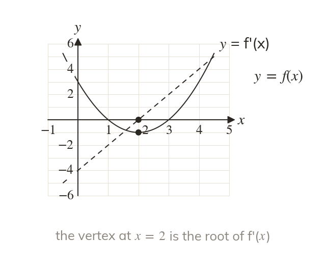
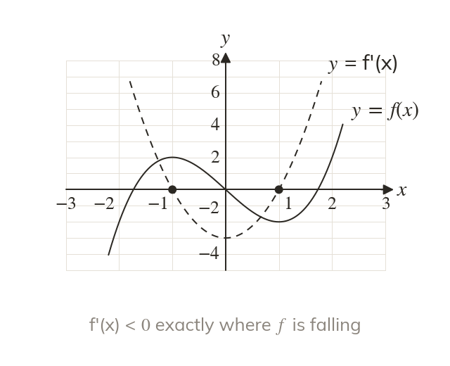
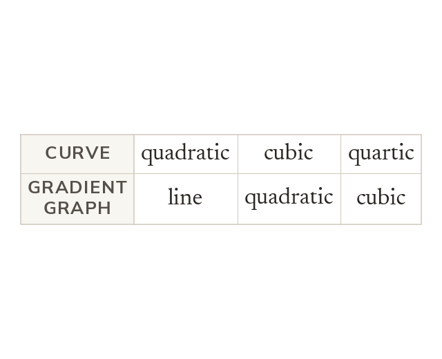
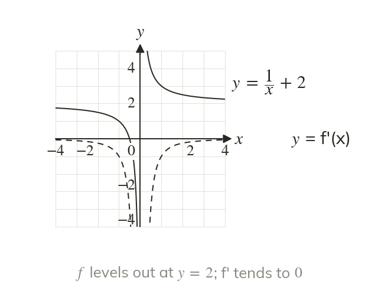
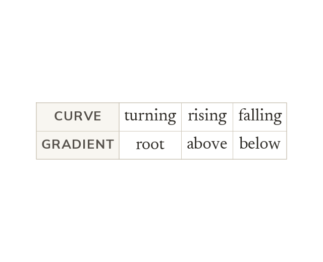
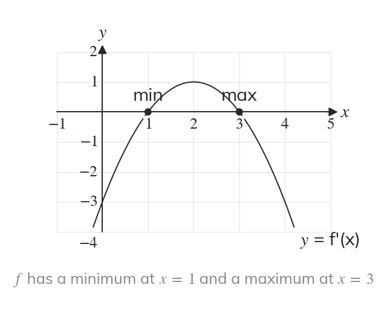

Roots from stationary points
Where has a stationary point, f′(x) so = f′(x) meets the x-axis there. For the vertex is at and f′(x) meets the x-axis at
The graph of = f′(x) can be drawn from the graph of without its equation. The stationary points give its roots, and the rising and falling parts give its sign. It is how a speed-time graph is read from a distance-time curve, and it ties together the shapes of and
Work down the page at your own pace. Write every answer in your book first, then click to check it.
Read each card, then follow the worked examples one step at a time.

Where has a stationary point, f′(x) so = f′(x) meets the x-axis there. For the vertex is at and f′(x) meets the x-axis at

Where f is increasing, f′(x) > so its graph is above the x-axis; where f is decreasing it is below. For f′ is positive, then negative between and then positive.

Differentiating lowers every power by one. So a quadratic's gradient function is a straight line, and a cubic's is a parabola.
Pick an answer. If it's wrong, the feedback tells you which mistake it was.
Write the blanks in your book first, then tap each one to check.
Read each card, then follow the worked examples one step at a time.

As a curve levels out towards its gradient tends to
So has asymptote but its gradient graph has asymptote

Each feature of the curve gives one on the gradient graph. A turning point gives a root, rising gives above the axis, falling gives below.

A root of f′ where it goes from negative to positive is a minimum of f; positive to negative is a maximum. Here f′ is negative, positive, then negative.
Pick an answer. If it's wrong, the feedback tells you which mistake it was.
Write the blanks in your book first, then tap each one to check.
Finished? Next lesson: 12.P12.8 Second Order Derivatives and Stationary Points.
For each skill, tap the one that is true for you today. Your Revise pages start with anything you mark Not yet.
Your ratings are saved on this device only.
Log in, then search for a code to practise that skill.